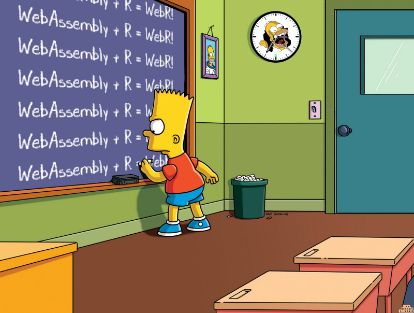

webR via Quarto Extensions

Imagine you’ve written a program in R. It’s simple and does exactly what you want but now, you wish to make it available for many people on the web, allowing them to run it within their web browsers. The challenge is that web browsers don’t natively understand R code.
WebAssembly
Traditionally, web browsers understand JavaScript as the primary language to run any dynamic operations. If you wanted to run code in a browser, you’d need to rewrite it in JavaScript. Re-writing code for every language to JavaScript is tedious and not efficient. This is where WebAssembly (or “wasm”) comes into play.
WebAssembly introduces a new type of code that can be run in modern web browsers. It is designed as a low-level virtual machine that runs code at near-native speed. What’s fascinating about WebAssembly is that it isn’t written by hand; instead, other languages (like C, C++, Rust, Python, R, and more) can be compiled to WebAssembly.
In essence, WebAssembly allows you to take code from languages other than JavaScript, compile it into a format that the browser can understand, and then run it efficiently.
webR
Compiling R to wasm was hypothetical even just a few years ago but is now possible via webR. Being able to run R functions within a web browser without the need for an R interpreter on the user’s end feels game changing.
webR is enabling R developers to bring their applications, algorithms, and visualizations to broader audiences via the web. R + wasm is definitely in the early stages of development and new use cases are being released daily by the data science and web development communities. For now, I’m just enjoying learning the basics and thinking about potential use cases.
Demo
For the examples below, I‚Äôm running webR via a Quarto extension. I‚Äôm following James Balamuta‚Äôs documentation on GitHub to learn how to use his webR Code Extension for Quarto before I dive deeper into the internals of webR. I‚Äôm basically using a plug-and-play implementation of webR for Quarto üöÄ. My goal is to start here and eventually use the raw webR framework for more robust applications.
And so, enjoy some webr-enabled executable code chunks in a static Quarto doc!
THAT WAS FUN! Enjoy, and happy learning.